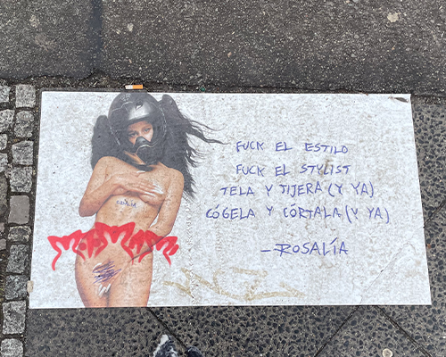
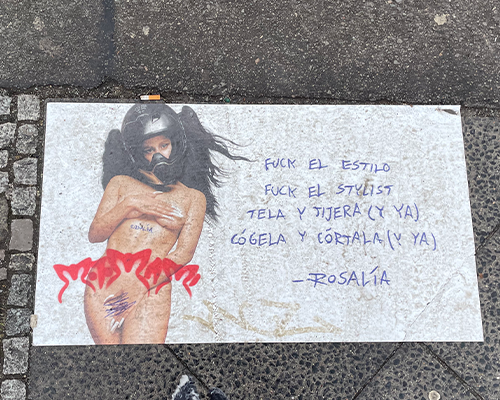
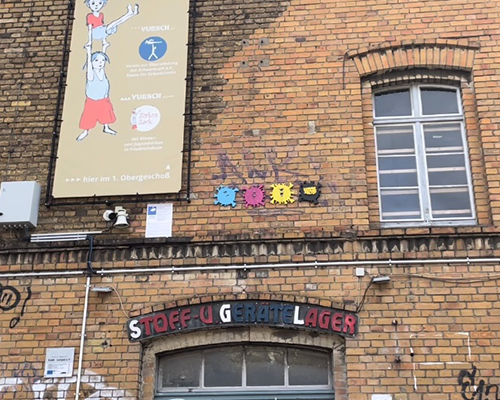
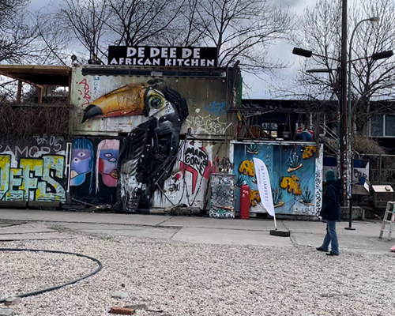
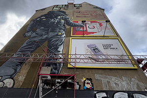
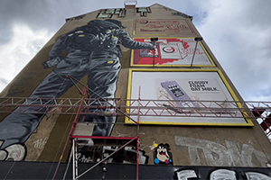
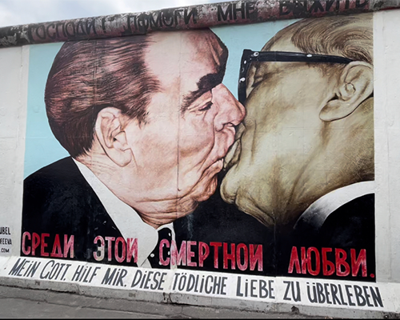
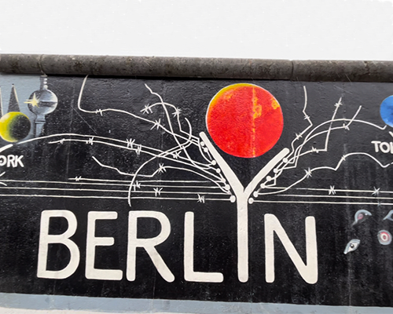
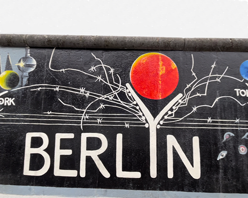
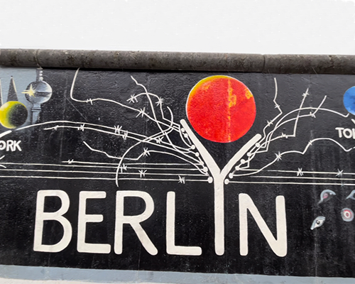

Berlin and street art
Previously, I told you about what you could do in Berlin and I mentioned the discovery of the
street art during
of a guided tour. I'm here today to share more photos and some little anecdotes
that I do not have
could share you in my last post.
I started my visit in the street “revaler strasse” where I could
see the advertising poster of Rosalia a Spanish singer for her new album. She created a whole advertising campaign
in Germany around street art, with paper posters glued to the wall and floor as well as tags.
 


I continued my visit in a small alley accessible via the street I told you about. I
came across the works of CMYK DOT, a German artist who is based on CMYK colors, the colors that
four can form any other color.

Continuing the exploration of this alley, a toucan imposed itself on me. It was made up
old car parts, bike parts or just metal parts found on the street. By far, these parts
disappeared and transformed into a huge 3-dimensional bird.


In the street "warschauer strasse", I could see a huge Swiss army knife and a man trying to
paint on
two huge walls.
 

I finished my visit to the Berlin Wall where I contemplated the most famous work of this wall, The
Fraternal kiss of
Dmitry Vrubel. As you walk along the wall, you will observe works more beautiful than the others.

 


I hope I have made you travel a little more today and I will tell you next time.
Tschüss
Tschüss